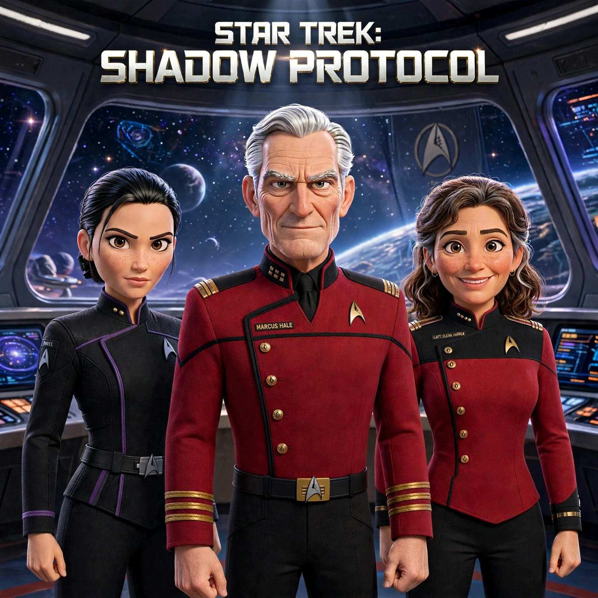

A Star Trek fan audio drama in twenty episodes. Season 1: The Long Silence. In 2411 a buried Starfleet black-ops directive resurfaces as colonies vanish without a trace. Season 2: The Hollow War. The machine intelligence behind the disappearances turns its hunger toward the Federation itself.
https://mq9f6t2kdq-lgtm.github.io/star-trek-shadow-protocol/feed.xml